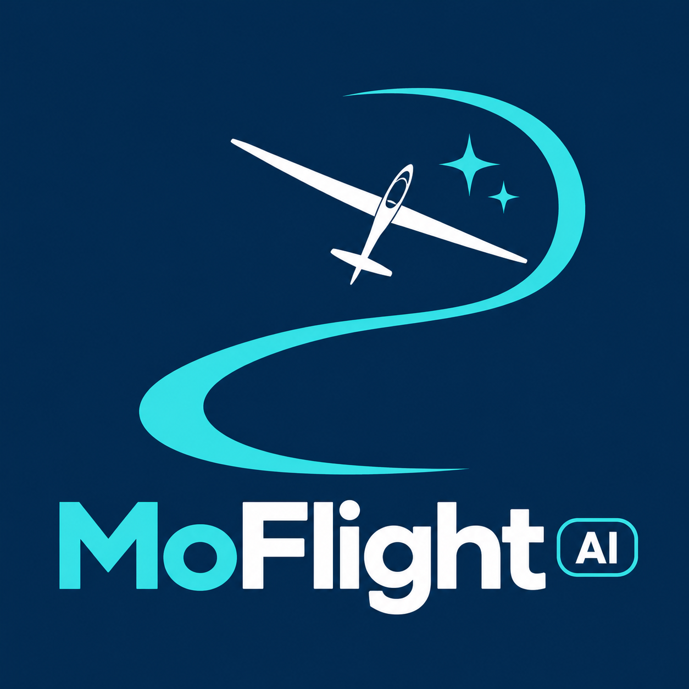

Review proposal · synthetic states · no live medical/provider data. Existing logo retained. These candidates are authored vectors; no icon dependency is selected.
Strong aviation identity; emphasizes gliding.
Broader aircraft metaphor; review tail/wing clarity at 28 px.

Vereinsflieger: ungeprüft. Eine frühere Anmeldung ist kein aktueller Nachweis.
Datenstand: kein Beispielbeleg ausgewählt.
Connection status and saved-flight freshness are separate. Tap actions here are illustrative; this is not the app.
Recommendation: B for the shared Flüge destination because flights may belong to different aircraft categories. A remains an alternative for a specifically gliding-related action. Review both with the complete navigation set before selecting the final artwork. Fit, large text, TalkBack and provider-overlay behavior still require native acceptance.
Full proposed behavior and audit inventory